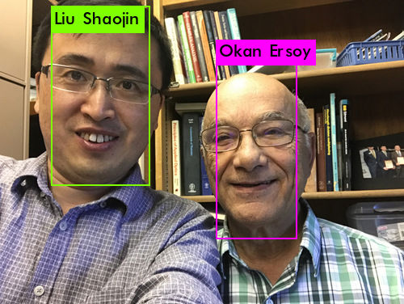
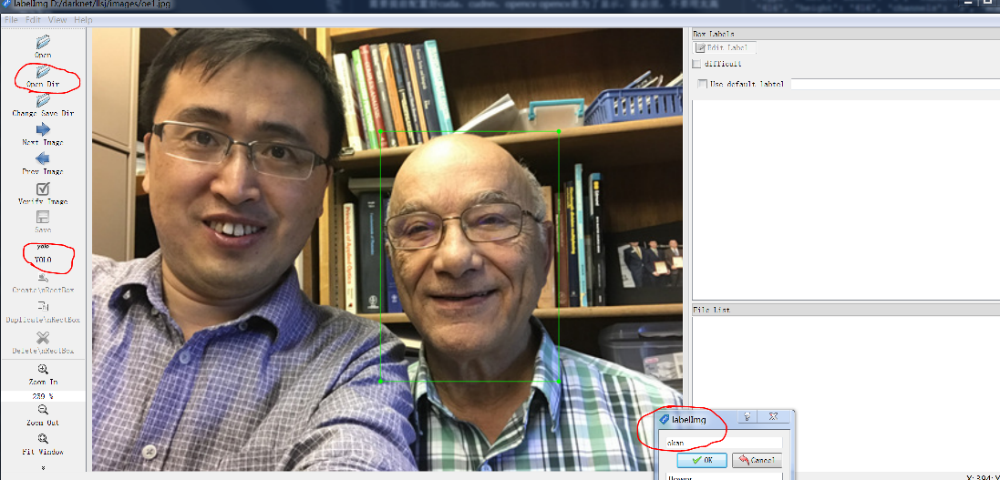
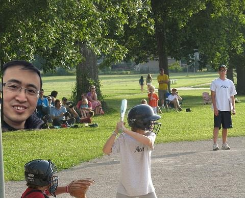
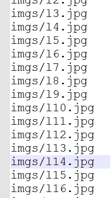
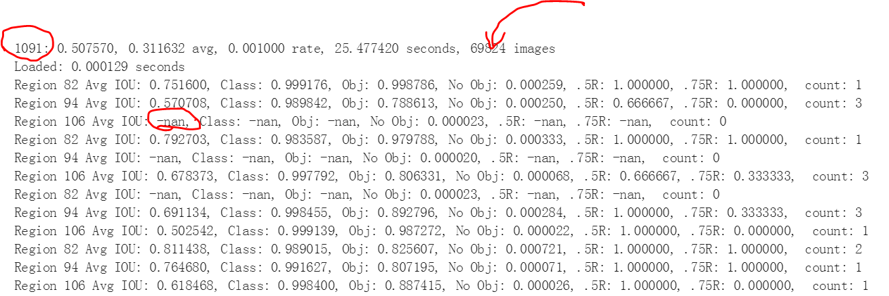

Purdue机器学习入门（六）yolo v3进行物体探测之训练自己的数据
文章目录

yolov3 训练自己的数据集
历时6个月，从零开始学习深度学习，第一个小目标是实现物体探测，在经历过多个坑后，今天终于实现了。记录一下过程。
1
|
先放最后的测试结果，训练的类型是我和我导师的头像，大约50张图片（训练集+测试集），共两类型Liu 和 Okan. |

yolov3 是c语言编写，网上有人已经将之改为pytorch框架下python的，关键是探测算法和cnn神经网络，了解了核心内容后可以根据需要更改为所用框架，用所需语言改写。
1.下载yolov3的工程
1 2 |
git clone https://github.com/pjreddie/darknet cd darknet |
2.修改配置文件
vi Makefile
1 2 3 |
GPU = 1 #用GPU进行训练，比cpu快得多，必须更改 CUDNN = 0 OPENCV = 0 |
保存
1
|
make |
需要提前安装好cuda，cudnn，opencv（为了显示，非必须，版本不要太高）
3.建立数据集（方法一：收集数据，自己手动加标签）
darknet支持VOC和COCO数据集，方法如官网，下面介绍如何建立自己的数据集。
1 2 3 4 5 6 7 8 |
imgs\
1.jpg
2.jpg
......
labels\
1.txt
2.txt
...... |
数据格式如上： 准备好jpg格式图片，批量改名，批量更改分辨率，大概600像素左右就行，不用太大。 采用labelImg.exe这个工具加上标签即可，得到1.txt的数据文件。 其中1.txt 格式如下：
1 2 3 |
80 0.91796875 0.1525821 0.1171875 0.211267 类别号 方框中心归一化x 方框中心归一化y 方框宽度归一化 方框高度归一化 |
重命名bat脚本（windows）：
1 2 3 4 5 6 7 |
@echo off
set a=00
setlocal EnableDelayedExpansion
for %%n in (*.jpg) do (
set /A a+=1
ren "%%n" "p!a!.jpg"
) |

3.建立数据集（方法二：收集图片背景数据，建立目标图片数据（png抠图），将目标图片随机叠加到背景，并自动记录位置标签）
- 好处是一键生成
- 详见 makeData.py
- 同时可以一键生成全部配置文件，即省去以下4,6,7，8步，详见 makeCFG.py

4.生成 train.txt 和 val.txt
其实就是图片的路径，需要根据实际修改（比如添加路径imgs/）。

获得文件名bat脚本（windows）
1
|
DIR *.jpg /B >train.txt |
5.下载预训练模型
1
|
wget https://pjreddie.com/media/files/darknet53.conv.74 |
重点：53指的是卷积层数，74指的是取前74层进行微调，最后几层一般是决定分类数量的，需要更改，因此只导入前数层的权重参数进行训练。
采用partial进行参数自定义抽取 ./darknet partial yolov3.cfg yolov3.weights yolov3.conv.74 74
6.修改cfg/xxx.data
1 2 3 4 5 |
classes= 2 # 训练样本集的类别总数 train = /home/darknet/train.txt #train的路径为训练样本集所在的路径 valid = /home/darknet/val.txt #valid的路径为验证样本集所在的路径 names = data/xxx.names #xxx.names文件所在的路径 backup = backup |
7.修改data/xxx.names
1 2 |
A B |
类别名称，根据自己需要修改
8.修改cfg/xxx.cfg
- 如果是训练， batch=64，subdivisions=8，可以根据机器配置适当修改
- 如果是测试， batch=1，subdivisions=1
- 共有三处需要修改filters和classes（filters=3*（classes+5））
- random=0即关闭多尺度训练(机器好不关闭)
cfg文件参数解释
| 参数 | 解释 |
|---|---|
| batch | 每一次迭代送到网络的图片数量。增大这个可以让网络在较少的迭代次数内完成一个epoch。在固定最大迭代次数的前提下，增加batch会延长训练时间，但会更好的寻找到梯度下降的方向。如果你显存够大，可以适当增大这个值来提高内存利用率。这个值是需要大家不断尝试选取的，过小的话会让训练不够收敛，过大会陷入局部最优。 |
| subdivision | 这个参数会让你的每一个batch不是一下子都丢到网络里。而是分成subdivision对应数字的份数，一份一份的跑完后，在一起打包算作完成一次iteration。会降低显存占用。如果设置为1的话就是一次性把所有batch的图片处理，如果为2的话就是一次一半。 |
| angle | 图片旋转角度，这个用来增强训练效果的。从本质上来说，就是通过旋转图片来变相的增加训练样本集。 |
| saturation，exposure，hue | 饱和度，曝光度，色调，这些都是为了增强训练效果用的。 |
| learning_rate | 学习率，训练发散的话可以降低学习率。学习遇到瓶颈，loss不变的话也减低学习率。 |
| max_batches | 最大迭代次数，训练自动停止条件。 |
| policy | 学习策略，一般都是step这种步进式。 |
| step，scales | 这两个是组合一起的，举个例子：learn_rate: 0.001, step:100,25000,35000 scales: 10, .1, .1 这组数据的意思就是在0-100次iteration期间learning rate为原始0.001，在100-25000次iteration期间learning rate为原始的10倍0.01，在25000-35000次iteration期间learning rate为当前值的0.1倍，就是0.001， 在35000到最大iteration期间使用learning rate为当前值的0.1倍，就是0.0001。随着iteration增加，降低学习率可以是模型更有效的学习，也就是更好的降低train loss。 |
[](test.cfg) [](train.cfg)
*重点*：注意windows和linux文本格式区别，linux下可以用cat xxx.txt 查看是否有^M

9.开始训练
从头训练用darknet53.conv.74，继续训练用训练好的权重参数（xxx_900.weights）
1
|
./darknet detector train cfg/xxx.data cfg/xxx.cfg darknet53.conv.74 |
多GPU
1
|
./darknet detector train cfg/xxx.data cfg/xxx.cfg darknet53.conv.74 -gpus 0,1,2,3 |

| 参数 | 解释 |
|---|---|
| Region xx: | cfg文件中yolo-layer的索引； |
| Avg IOU: | 当前迭代中，预测的box与标注的box的平均交并比，越大越好，期望数值为1； |
| Class: | 标注物体的分类准确率，越大越好，期望数值为1； |
| obj: | 越大越好，期望数值为1； |
| No obj: | 越小越好； |
| .5R: | 以IOU=0.5为阈值时候的recall; recall = 检出的正样本/实际的正样本 |
| 0.75R: | 以IOU=0.75为阈值时候的recall; |
| count: | 正样本数目 |
*重点*：
- 训练需要很久，50张图片100个epoch大概半小时
- 刚开始loss很大，1000多，200个循环后，才勉强有效果，500个后才基本出结果，我训练了900个效果才稍好（loss降为0.3），据说要10000以上才好用（据说有人烧过GPU，慎重训练大数据）。
某些层出现-nan是正常的，表示该卷积层上看不到特征图，往往是特征较小区域，没关系。
当训练过程中需要输出log日志文件时，需要在训练时一起输出，命令：
./darknet detector train cfg/tiny-yolo.cfg tiny-yolo_8000.conv.9 2>1 | tee log.txt
训练后测试无结果。原因一是训练发散；二是训练不充分，结果置信概率太低。
（1）训练发散，看训练的时候迭代次数后边的两个loss值，如果这两个值不收敛就有问题。可以降低learning rate 和 提高batch；
（2）训练不充分，可在test的时候渐降低 threshold，默认是.25。
12.开始测试
./darknet detector test cfg/xxx.data cfg/xxx.cfg backup/xxx_900.weights data/1.jpg
这样就生成了一开始的图片了predictions.jpg。
文章作者 Jeff Liu
上次更新 2019-03-21